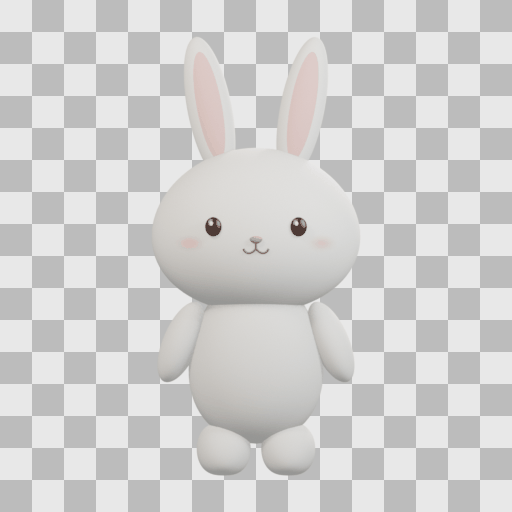
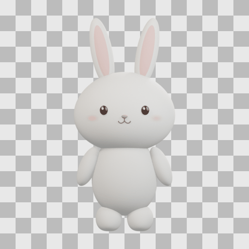
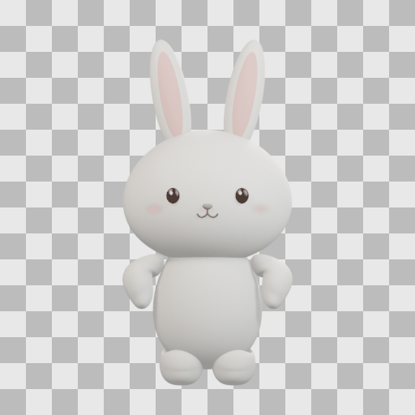
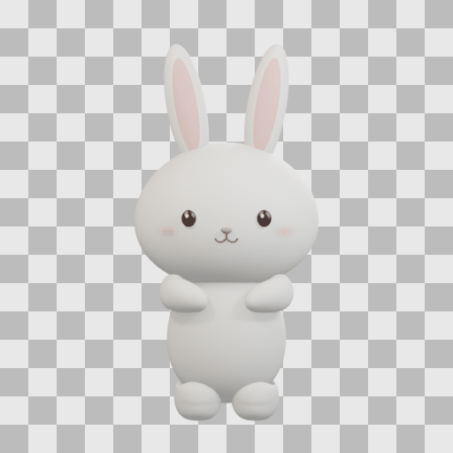
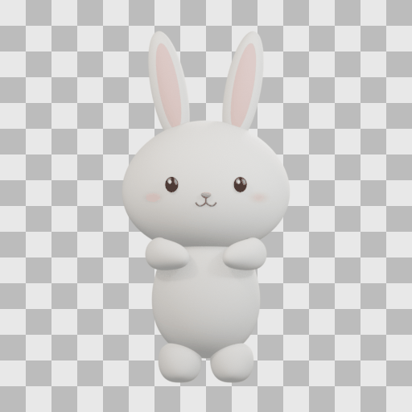
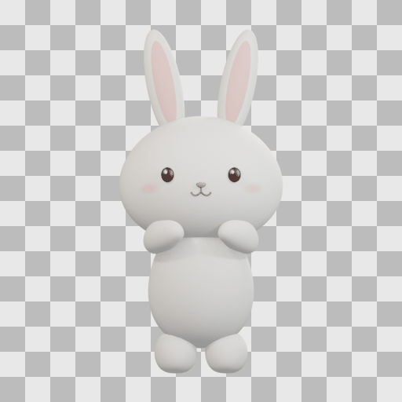

Idle
12 frames · 6 fps · repeat -1

512 × 512 fixed frames. GIFs use an opaque checkerboard; PNG assets retain RGBA. Idle loops; other GIFs play once. Contact sheets mark the fixed foot anchor in blue and hand attachment in red.
12 frames · 6 fps · repeat -1

8 frames · 10 fps · repeat 0

8 frames · 10 fps · repeat 0

8 frames · 10 fps · repeat 0

12 frames · 12 fps · repeat 0

16 frames · 10 fps · repeat 0
